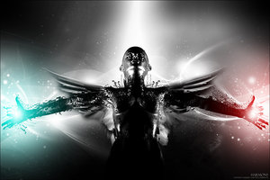

Forums galactiques > Assemblée Galactique : diplomatie officielle > Le moine....de....
Pages : 1
| Ametakna Respect diplomatique : 7  13/04 ETU 20:41 | Score : 7 Détails 22h00....
Cite d’Arachnide... Le moine de la mort... Ce soir là, il faisait froid, le ciel était d’une lueur pâle mais la puissance de la lumière de la lune traversa les nuages épais. Un moine errait dans la Cité d’Arachnide. Il portait une capuche ce qui cachait son visage. Quand il se retourna, on put apercevoir une étrange volute noire au niveau de sa tête. Le moine revint dans son sens d’origine et repartit en direction d’une grande bâtisse qui était presque invisible à la tombé de la nuit. L’homme frappa, il semblait faible mais la volute noire continuait de sortir de son corps. La porte s’ouvre, le moine rentre. Une puissante lumière éclaira la rue jusqu'à ce que la porte se referme. AAAAAAAHHHHHHHHHH !!!!!!!!! SAUVEZ NOUS !!!!!! La porte explosa et on vit un home en tenue verte courir pour échapper à une mort certaine. Cette mort, seul un homme ne la fuyait pas, seul le moine resta à l’intérieur. Deux moines étaient à présent dans le bar. Un moine en tenue bleu qui avait donné la mort à 5 membres du bar, et, un moine qui laissait échapper une volute noir de son visage. Le moine en bleu avait fais appel à des milliers de chenille vénéneuses pour tuer ses victimes qui sous l’effet de l’alcool, on cru rêver...Il leva les bras, des centaines de chenilles sortirent de ses manches pour bondir sur l’autre moine. Celui-ci fut protéger par son volute noir... « - Mais, mais, qui es-tu ? Comment à tu put éviter la mort ? Ces chenilles ne peuvent être stoppées !! - Me donnez la mort ? Comment tuer la mort elle-même ? » Sans un mot, sans un geste, sans un bruit, la volute fut plus dense et se transforma en une araignée géante, l’homme cria juste avant son dernier souffle... 22h43... 3 000Km au dessus de la Cité d’Arachnide... La mission... Après avoir tué le dernier moine « dangereux » l’homme enleva sa capuche et on vit que son visage était martelé, saturé de cicatrice, ideux. Il était dans la salle principale d’un Palais. Un autre moine arriva, il était semblable à l’autre mais il dégageait une forte puissance et une volute rouge sortit de son visage...Portant sa capuche, le moine s’assit sur un fauteuil... « - Ametakna, tu as réussi ta mission qui était relativement facile. Je vais t’en confier une autre qui relève beaucoup de capacité. Je t’es choisi car tu en possède beaucoup. Avant que tu me pose la question, tu n’as pas le choix. - En quoi consiste cette mission maitre Kamabintro ? - La galaxie dont tu viens d’exorciser et dans laquelle tu as fais ton boulot était une galaxie qui était très petite, donc facile pour le repérage, il y avait à peine une dizaine de système planétaire. Celle dans laquelle tu vas aller en compte environ mille quatre cent. Tu vas avoir un peu plus de mal, mais j’ai confiance en toi, et je t’y envoi. La seule chose que tu dois savoir, c’est son nom, je crois que c’est la Galaxie.......d’Origine. » Il y eut un petit « pouf » et l’endroit où Ametakna était laissa place à une fumée noire... |
Pages : 1
Forums galactiques > Assemblée Galactique : diplomatie officielle > Le moine....de....